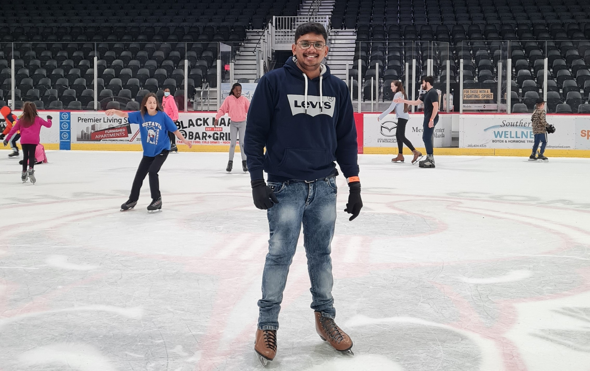

My Introduction
- I am Gopichand Puli. I am studying Masters in Computer science at University of Alabama at Birmingham. My goal is the become a web architect in product based company.
- I was born and bought in a city called Guntur in the State Andhra Pradesh, India.
- I completed my bachelor's in Mechanical enginnering at Sathyabama University in 2018. Then I got selected in a software company called Cognizant technology solutions.
I started my journey in CTS from September 27th 2018 in Pune, India(One of the best places I have visited so far). I continued my journey in this company for 3.5 years.